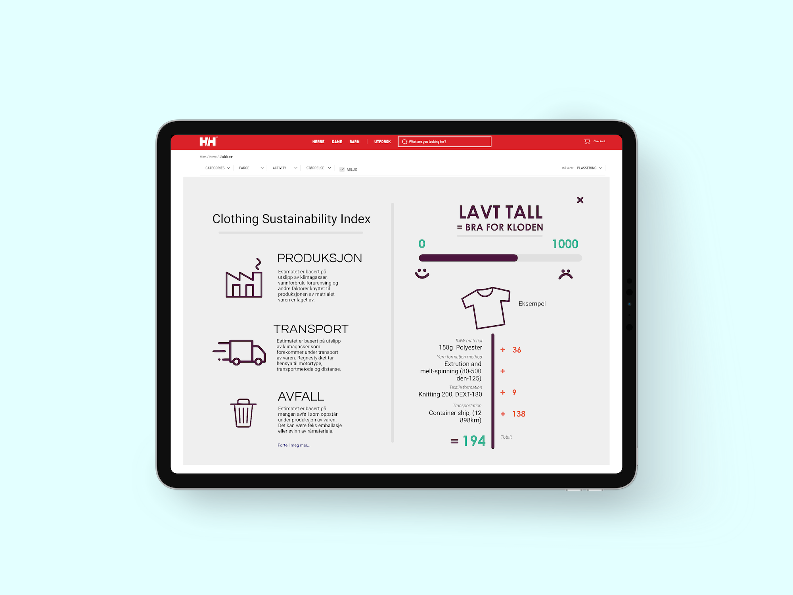
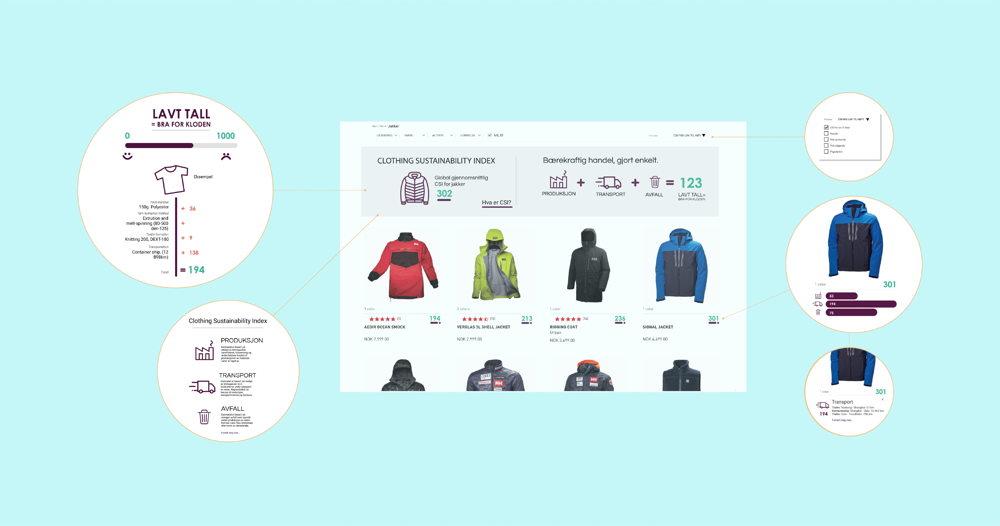

In the subject Sustainable Design, my group and I were tasked with finding a daily practice to which we were to analyse and improve from a sustainability point of view.
We chose the practice of online shopping.
Through interviews and research, we found that many people wishes to adopt a more environmental friendly lifestyle, but doesn’t have the knowledge or time to do propper research before making purchasing decisions. Logos and brands like FairTraid, FSC and EU Ecolable gives the consumer something to look for, but is not affecting the user’s habits or purchasing patters. We wanted to do something about this.
After talking to several Norwegian manufacturers and e-commerce retail stores, we found that the majority of the manufacturers kept accessible records of the manufacturing process’, and the online stores have been experiencing an increased interest in “more sustainable products”. We used this to create the CSI; Clothing Sustainability Index. The concept is based on the manufacturing process fo a common cotton t-shirt, but can be scaled to fit other categories.
The idea is to use an already existing way of calculating the relative sustainability of a manufacturing prosess, called Higg’s Manufacturing Sustainability Index (MSI), and presenting the result in an easily understandable format to the end consumer. This gives the consumer information about how the product fairs relatively other products in the category based on transportation, production and end-waste.
The scientific poster can be viewed here, and the end report can be read here.